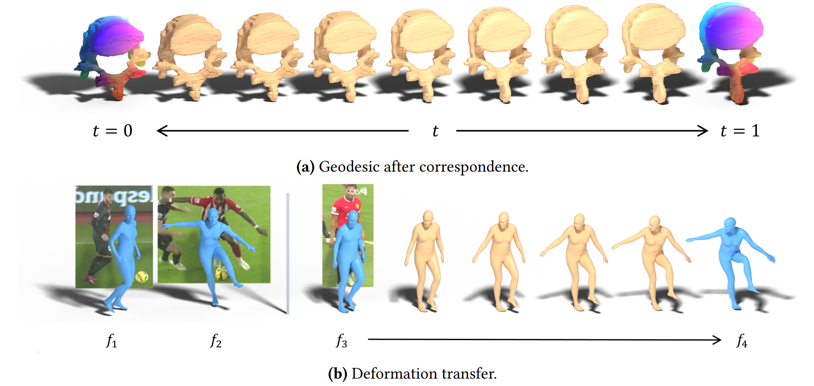
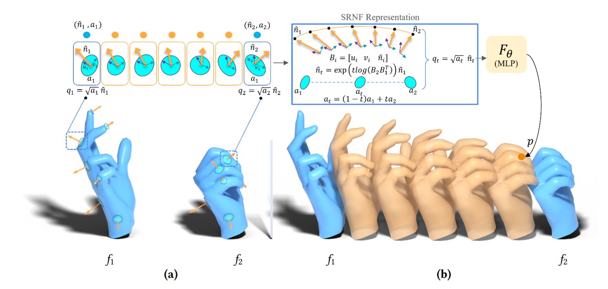
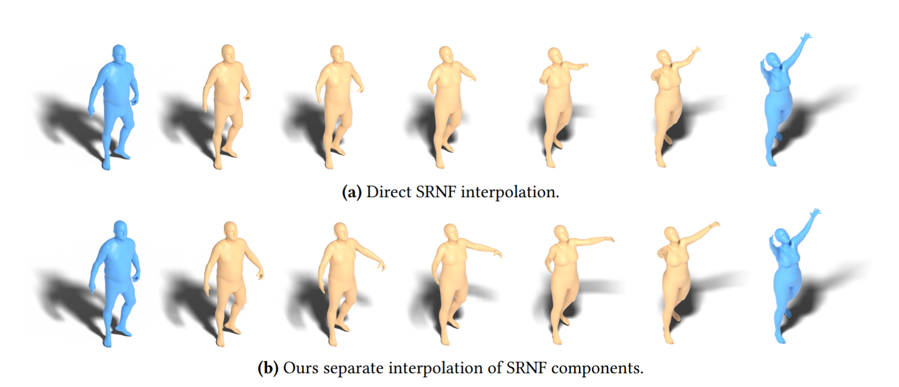
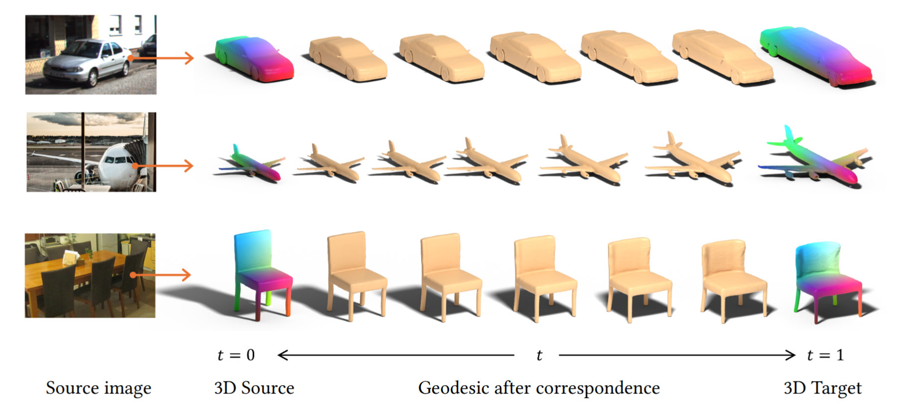
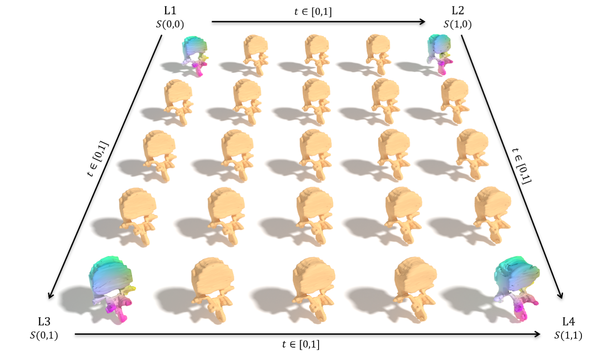

NERA: A Neural Elastic Riemannian Framework for Shape Analysis and Generation of 3D Objects with Large Nonrigid Deformations
- Awais Nizamani Murdoch University, Australia
- Hamid Laga Murdoch University, Australia
- Guanjin Wang Murdoch University, Australia
- Farid Boussaid The University of Western Australia, Australia
- Mohammed Bennamoun The University of Western Australia, Australia
- Anuj Srivastava John Hopkins University, USA

Figure 1: Illustration of geodesic path computation and deformation transfer with our method. (a) shows the geodesic path between two vertebrae aligned using our semantic correspondence method. (b) shows the deformation from 𝑓1 to 𝑓2 transferred to 𝑓3, generating intermediate surfaces for 𝑡 ∈ [0, 1] and the final transferred pose 𝑓4 at 𝑡 = 1.
Abstract
We introduce NERA, a neural Riemannian framework for elastic shape analysis and generation of 3D objects undergoing large nonrigid deformations. Elastic shape analysis quantifies shape differences through the bending and stretching required to deform one surface into another. Square Root Normal Fields (SRNFs) simplify these computations by encoding local surface area and normal direction. However, direct SRNF interpolation couples changes in area and orientation, potentially causing unnatural shrinkage. Moreover, SRNFs generally do not admit a unique inverse, and numerical and neural methods used to map SRNFs back to the surface rely on spherical parameterization and are restricted to genus-0 surfaces. This paper addresses these limitations through (1) a geodesic formulation that separates local area changes from orientation changes through explicit area interpolation and local tangent frame rotations, (2) a mesh-based correspondence framework that establishes a common topology within a collection of surfaces, supporting higher-genus shapes without the need for spherical parameterization, and (3) a learned approximate SRNF inverse model that improves reconstruction accuracy and reduces inversion time to less than 1 s, compared with 3 s and 10 min from previous neural and numerical methods, respectively. We demonstrate NERA on shape analysis tasks of geodesic computation, deformation transfer, statistical summarization, and shape generation on the datasets of humans, animals, manmade objects, and anatomical structures, including surfaces reconstructed from real-world images. To the best of our knowledge, this is the first SRNF based elastic shape analysis framework to support higher-genus surfaces, with applications to anatomical structures and reconstructed surfaces from real-world images.
Approach

Figure 2: Overview of our approach. Given two aligned surfaces 𝑓1 and 𝑓2, we compute their SRNFs as 𝑞1 = √𝑎1 ˆ𝑛1 and 𝑞2 = √𝑎2 ˆ𝑛2, where 𝑎𝑖 and ˆ𝑛𝑖 denote the local area elements and unit normals, respectively, as shown in (a). To obtain an intermediate surface 𝑓𝑡 along the geodesic path, we first construct 𝑠𝑟𝑛𝑓 𝑡𝑖𝑚𝑒𝑤𝑖𝑡ℎ𝑎𝑟𝑒𝑎𝑛𝑜𝑟𝑚𝑎𝑙 in the SRNF space. We linearly interpolate local area elements as 𝑎𝑡 = (1 − 𝑡 )𝑎1 + 𝑡𝑎2 and obtain ˆ𝑛𝑡 by interpolating the relative rotation between the oriented tangent frames 𝐵1 and 𝐵2. Each frame 𝐵𝑖 = [ 𝑢𝑖 𝑣𝑖 ˆ𝑛𝑖 ] consist of two orthonormal tangent vectors (𝑢𝑖 , 𝑣𝑖 ) and the unit normal ˆ𝑛𝑖 , as shown in (b). Finally, our learned SRNF inversion maps 𝑞𝑡 back to the surface space to recover 𝑓𝑡 = 𝐹𝜃 (𝑞𝑡 ).
SRNF vs Components

Figure 3: Effect of the interpolation strategy on the geodesic path between two human poses. We compare (a) direct interpolation of SRNF maps and (b) our approach, which linearly interpolates local area elements and rotates unit normals using tangent frames. As shown, separating area and orientation changes reduces shrinkage and produces more natural intermediate poses.Geodesic Videos
Geodesic Videos - Objects
Shape Analysis Examples

Vertebrae Analysis
